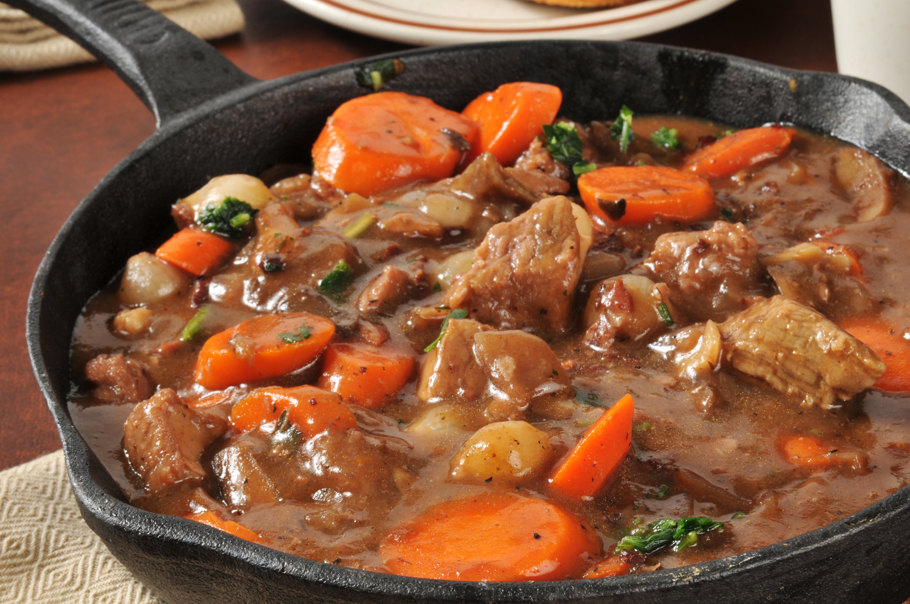

Description
Le boeuf bourguignon est un plat traditionnel français, typique de la cuisine bourgeoise du 19ème siècle. Aujourd’hui, il est toujours aussi populaire et apprécié pour son goût savoureux et sa texture moelleuse
Ingredients
- 1 kg de boeuf à bourguignon
- 1 bouteille de vin rouge (de préférence du Bourgogne)
- 2 carottes
- 2 oignons
- 1 branche de céleri, 1 bouquet garni (thym, romarin, laurier)
- 6 gousses d’ail
- huile d’olive
- sel et poivre
Preparation
- Préchauffez le four à 150°C
- Dans une grande marmite ou un faitout, faites chauffer de l’huile d’olive à feu moyen. Ajoutez le bœuf et faites-le dorer de tous les côtés
- Ajoutez les oignons, l’ail, les carottes et le céleri et laissez cuire quelques minutes de plus jusqu’à ce que les légumes soient ramollis
- Versez le vin rouge et portez à ébullition. Ajoutez ensuite le bouquet garni et assaisonnez de sel et de poivre selon votre goût
- Couvrez avec un couvercle et mettez au four. Faites cuire pendant 3 à 4 heures, ou jusqu’à ce que le bœuf soit bien cuit et très tendre
- Servez avec des pommes de terre bouillies ou de la purée de pommes de terre et savourez !
Home